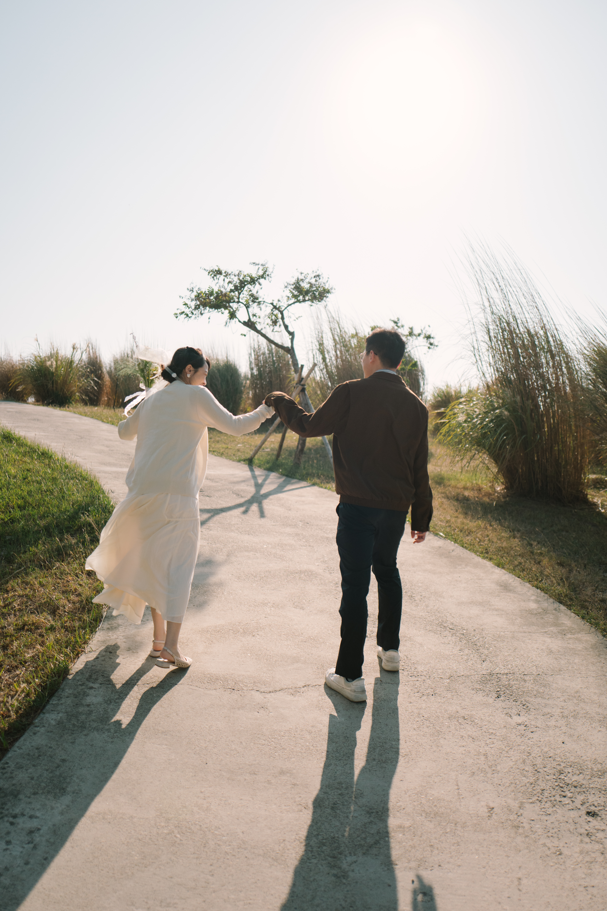
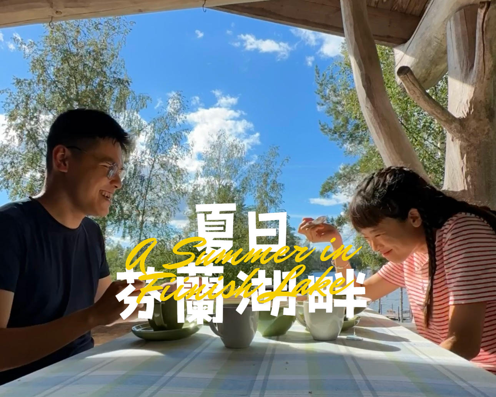
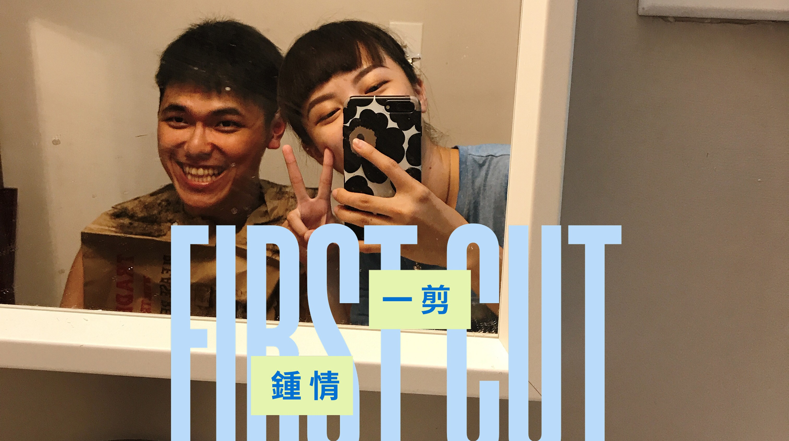
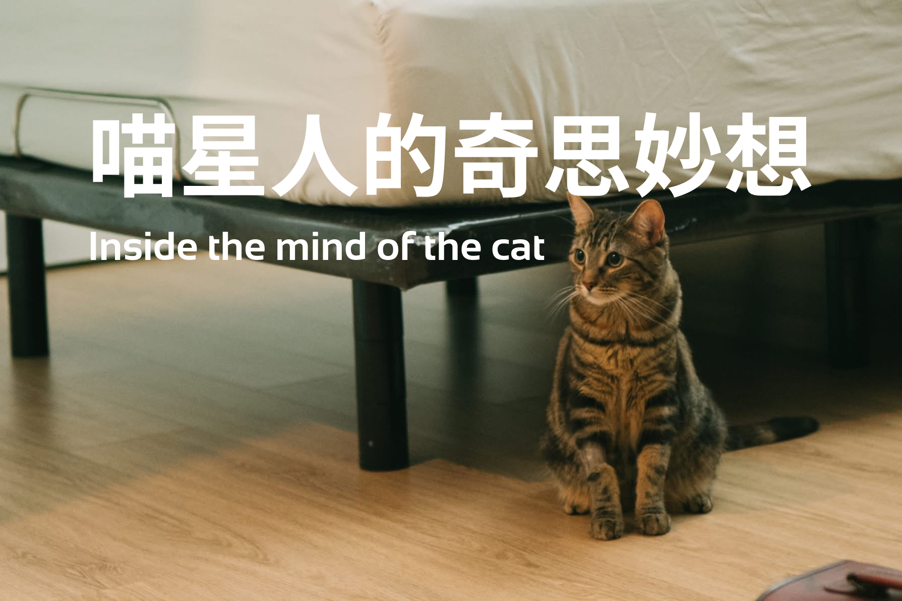
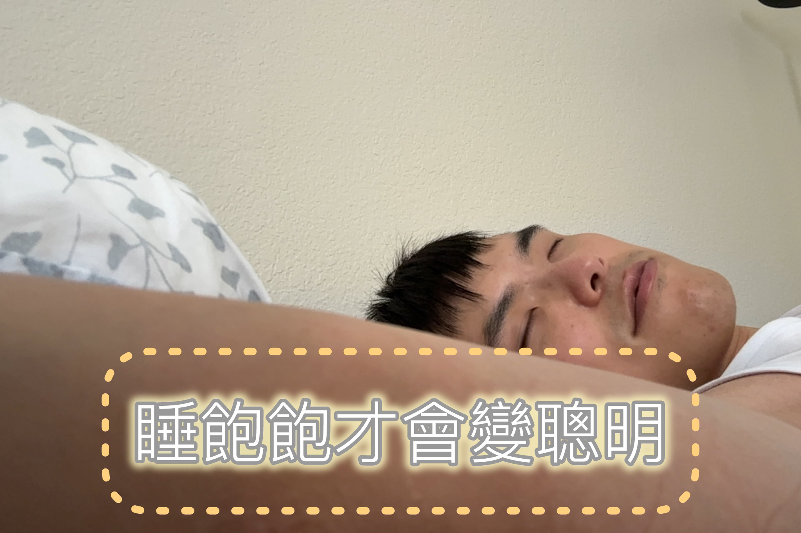

Best Husband Forever
Season 1 • 2026
一部專屬於 Jefferson 的原創影集。
一位全世界最幸福的美少女與她超級帥氣的老公，從命運般的重逢，到在平凡日子裡慢慢相愛，最終決定攜手走過往後的每一天。
Top Picks for You Today



Netflix Originals





Season 1 • 2026
一部專屬於 Jefferson 的原創影集。
一位全世界最幸福的美少女與她超級帥氣的老公，從命運般的重逢，到在平凡日子裡慢慢相愛，最終決定攜手走過往後的每一天。




這是一部關於芭魯比與 Jefferson 的長篇浪漫影集。 從相遇的那一刻起，每一集都充滿了歡笑與心動。
目前本劇已獲得「全球最佳老公獎」提名
Cast: Jefferson, Barbie
Genres: Romantic, Life
This show is: Sweet, Heartwarming